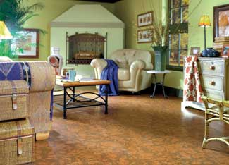
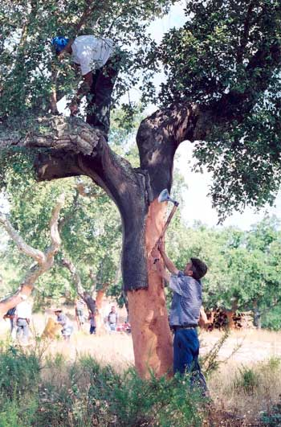

If you’re looking for warm, cushiony flooring, think cork. Soft like suede, it has the insulating qualities and resiliency of carpet; the easy-to-clean surface of wood or tile; plus luxurious appeal from its earthy colors and rich visual texture. Made from tree bark, it’s also a natural and renewable resource, so it’s environmentally friendly, right?
The answer is yes, but with a footnote.
Cork has a multitude of green characteristics. The material is acquired by stripping most of the outer bark from the cork oak tree. This regular harvesting does the tree no harm, and the bark grows back, to be stripped again every nine years. The trees live for 200 years or so, and the forests, called Montados, are highly prized and passed down through generations of families in the cork-producing business.
Even cork processing is relatively straightforward: The cork sheets or pieces are cured, boiled and pressed. Scraps are collected for reuse, so almost nothing is wasted.
Yet for those of us in North America trying to be more eco-friendly, cork has a notable drawback: It comes from Europe. Forests of Quercus suber, the one oak species that produces cork, grow in the Mediterranean, primarily in Portugal. Fuel consumption from shipping cork adds to the embodied energy in every cork flooring product. Although the trees have been successfully grown in California, they haven’t produced the corky bark, likely from a subtle difference in the ecosystem.
The dilemma of long-distance shipping, however, is counter-balanced by the truly urgent need to preserve cork oak forests. Nora Berrahmouni, Mediterranean forest unit director at the environmental nonprofit World Wildlife Federation (WWF), says that cork forest ecosystems are endangered by increasing population growth and forest clearing. With the loss of viable Montados, “there could be intensification in forest fires, a loss of irreplaceable biodiversity and an accelerated desertification process,” she says.
“The cork forest loss is coming from the decline of the global cork market,” Berrahmouni says, explaining that conventional wine corks are being replaced by aluminum screw tops and petroleum-dependent plastic stoppers. The decreased demand for cork has devalued the forests, leading to sales - even abandonment - of the once-priceless land.
Cork products such as flooring, on the other hand, will keep Montados intact and support a sustainable form of agri-forestry, Berrahmouni says. “We encourage consumers to buy cork flooring materials.”
In addition to its environmental benefits, there are many practical reasons to choose cork for flooring. The material is waterproof (think of the cork in a bottle), and the natural waxy substance inherent in cork, called suberin, makes it mold and mildew resistant, too. If someone in your family suffers from allergies, a cork floor could provide a soft and warm alternative to allergen-collecting carpet.
Cork is even naturally flame-resistant. And it’s acoustically insulating properties - shhh, it’s quiet - will take the clatter and thud out of noisy foot traffic.
Cork flooring can be used in living areas, bedrooms, workout rooms and even wet spots such as bathrooms or saunas. You can purchase cork floors as roll-out sheets, floating panels, stick-in-place squares or tap-in-place tongue-and-groove tiles. Habitus Architectural Finishes even sells small, round, penny mosaic cork tiles, which are installed much like ceramic or glass mosaics, with mastic and grout. And some types of cork flooring are suitable for use over radiant heat.
Pricing varies considerably, from an affordable $2 per square foot to over $20 per square foot for specialty shapes, styles or colors. Most cork flooring installations can be managed by do-it-yourselfers. Intricate patterns or tricky layouts may require professional installers.
Because of its elasticity, cork is especially forgiving on uneven surfaces, and may even be installed directly on top of existing wood, linoleum or similar flooring - or as underlayment for ceramic, wood or stone. Foot traffic and even heavy furnishings are well-tolerated because cork springs back.
Not all cork flooring is made equal, however; some products have not-so-eco-friendly binders, finishes or substrates added. Cork is sometimes combined with Polyvinyl Chloride (PVC) to make resilient flooring much like linoleum. Vinyl is best avoided, however, as the manufacturing of it may produce hazardous byproducts and the disposal may leach toxins into the environment. (The U.S. Green Building Council has acknowledged “strong environmental and human health concerns” with vinyl.)
Other significant factors to consider are the dyes, binders, adhesives and/or finishes used in the manufacturing or installation processes for cork flooring. To preserve the air quality within your home, look for cork flooring that is formaldehyde-free, has low- or zero-volatile organic compounds (VOCs), and that is made without harmful solvents. Prefinished cork flooring may be preferable, as it will have already offgassed (released harmful chemicals) considerably before installation. If you will be finishing the cork flooring on site or using an adhesive, choose a low-VOC variety recommended by the flooring manufacturer.
Floating or snap-in-place cork flooring usually has an engineered wood substrate. Look for substrates that are formaldehyde-free. If you can find it, choose cork flooring with a wood substrate certified by the Forest Stewardship Council (FSC), which ensures sustainable practices from the forest to the manufacturer.
Berrahmouni says that like FSC-certified wood products now available in many home improvement stores, cork forests and products can also be recognized by the FSC, but the products are uncommon and generally not available to consumers yet. For now, she says, “We would encourage consumers to ask for FSC cork products so that they can deliver the message that people are ready to buy them.”
According to ReCORK America, a cork stopper recycling project sponsored by Amorim, the world’s largest producer of cork bottle stoppers, there are approximately 13 billion corks sold into the market each year. Almost all of them end up in the trash - a sad fact because corks can easily be recycled into flooring and other commercial products.
To combat the uncorked waste, a few recycling efforts are making earnest efforts. Most recycling programs require consumers mail the corks to a site, much like recycling printer cartridges. Northern California Whole Foods stores are collaborating with ReCORK by providing cork drop-off sites. Yemm & Hart, who makes cork flooring from recycled stoppers, gives preferential pricing to those who recycle.
ReCORK America
TerraCycle
Yemm & Hart
Portuguese Cork Association (APCOR)
WWF: Cork Oak Landscapes
AmCork/American Cork Products Company
APC Cork
Evora Cork Flooring
Expanko Cork
Globus Cork
Habitus Architectural Finishes
Natural Cork
WE Cork
Wicanders
To learn more about bark, read Bark is Beautiful.
Do you think the benefits of using cork outweigh the embodied energy in shipping it to the United States? Share your thoughts by posting a comment below.|
 NATURAL CORK BILBAO FROM EARTH & CLASSICS SERIES Cork flooring comes in a variety of shades and patterns. |
 AMORIM CORK COMPOSITES Harvesting bark from cork trees doesn't kill the trees. |
|